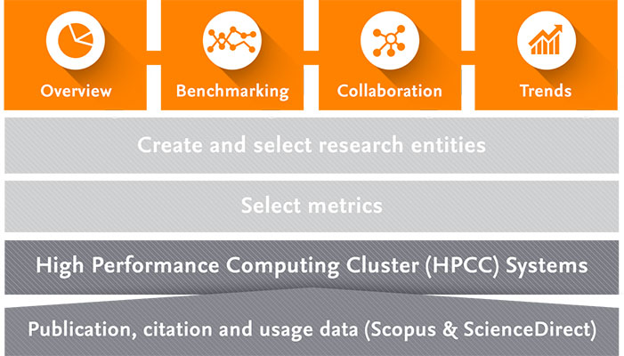

MarkLogic
NoSQL for Scientometrics
Elsevier Scopus
abstract and citation database of peer-reviewed literature
scientific journals, books and conference proceedings
comprehensive overview of the world's research output
science & technology, medicine, social sciences, arts & humanities
smart tools to track, analyze and visualize research
Scopus Custom Data
Time: 1996-2012
Size: ~200GB p.a.
Data Format
batches of 10.000 pgp encrypted, compressed archives
separate XML files for metadata and abstract
SQL Architecture
map XML fields to table columns
set of primary keys
abstracts in single column
Indicator Derivation
Elsevier SciVal
